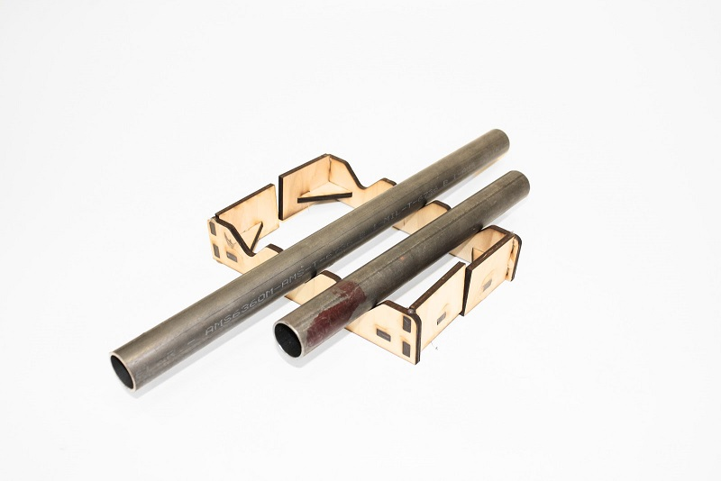

Aenean ornare velit lacus, ac varius enim lorem ullamcorper dolore aliquam.
In order to play nice music we need a nice instrument. We decided make, not buy, an instrument in order to both reduce cost to us and as a fun challenge. At the beginning, we weren’t sure what material would be best, so we manufactured a range of possible instruments and rated them on their cost, pitch, and timbre.

We decided on metal pipes for our notes because of their high marks in every category we tested
Additionally, we experimented with the actuation that causes the dropping of the marbles. For this sprint we tested using a stepper to control both when a marble drops and where the marble goes.

As you can see our device is not much yet, with only 2 notes and a slow servo motor, but we accomplished our sprint goals of exploring the materials for making notes and testing out some actuation.
After getting a good feel for our system in Sprint 1 we decided to pivot on a major design aspect of our machine, namely its actuation. As you can see in Sprint 1 we routed marbles with a servo that could open a gate and let a marble through. This is effective for example tune playing; however there are several limitations: many servos are required for a large range of notes, servos are severely limited in speed and therefore lack the temporal precision needed to play a song, and all the notes would have to be controlled by a computer rather than a microcontroller if you wanted to play multiple songs. So we decided to pivot.
We decided that if the notes of the song were stored physically rather than in a computer, we could create a device that can play faster songs, be mechanically cooler, and more aesthetically pleasing.
So for Sprint 2 we wanted to manufacture a prototype that:
Without any adieu, here it is in all it’s glory!
You’re probably wondering how it plays music. Well if you will refer to the images below, we’ll tell you.


Well, this was the intention of each mechanism. As in life, things do not always turn out the way you expect. Here’s Ode to Joy:
As you might notice from the video, our stepper motor is not where it is supposed to be. Also, there is string connected to a screw in our song sheet. As we discovered after fabrication, wheels, especially the one driven by the stepper motor, do not get enough grip on the song sheet to reliably move it. As a quick fix, we attached a string to the sheet and to the stepper to feed it through.
Addressing the issues from the last sprint:
Our top priority for this sprint was fixing the wheel grip issue from the last sprint. If we do not have a song sheet feeding in on its own, we do not have a product.
Beyond that, we wanted to Manufacture a prototype that:
Fixing Grip Issues:
After experimenting with wheels and strings as methods of driving the sheet, we decide that neither are sufficient for our purposes, with wheel not getting a good grip and the string being too jerky and hard to control. Consequently, in sprint 3 we switched to a rack and pinion system to control the sheet, as shown below.

This enables us to both get a better grip on the sheet as well as control it with more spatial precision.
Recycling Marbles:
Next, we focussed on our next goal of recycling marbles so the machine can keep playing without having to be reloaded. Thi requires both marbles to be routed to an appropriate spot after hitting pipes, for marbles to be brought back to the top and subsequently be loaded into the reservoir.
The marble routing was trivial, we simply angled our bottom plate and added ramp so all the marbles would collect in a bottom corner of the machine.
The next step was more difficult. We needed a good way to bring the marbles back to the top at a fast enough rate that they could keep up with a song sheet. The two likely option are either a belt (possibly magnetic) that would take marbles back up to the top and a water wheel that would keep the marbles in compartments that release them at the top. As you can see from the picture below, we ended up going with the wheel due to its high marble capacity… and it just looks so cool.


Since the CAD was designed in an intelligent way, scaling up to an octave was trivial. But since we had to recut all parts of the device we did not have enough time to solve our third goal of variable song sheet speed. Instead we leave room extra space in the cut sheet for longer notes.
Finally, here is the final device assembled!

Looks impressive doesn’t it? Good, cause it doesn’t work.
Unfortunately after finally assembling the device at the end of sprint three, we found that it did not play beautiful melodies like we hoped for 3 big reasons:
Additionally, the mechanism to reroute marbles to the top was non-functional for 3 reasons:
Being our fourth and final deliverable we needed to polish our design and come up with a working product. So our goals for the final deliverable were to
So, this is a lot to change. Let’s see how we did on each.
Get consistent feeding into the song sheet:
Originally the spacers of sprint 3 caused marbles to get stuck on each other and not feed correctly. To counteract this we took out the spacer and turn the feeder in to a wide ball pit (not the fun kind) where the is a long base layer of marbles that provide plenty of opportunity for marbles to fall into the sheet. This method worked significantly better and we found no problems with loading marbles correctly.
Change our marble collection funnel so it will consistently catch marbles from the wheel:
After checking to see where the marbles were missing, we extended the collection tray to account for that area, catching the marbles that missed before.
Make the base plate steeper:
To fix the problem of the marbles not routing into the wheel, we increased the steepness of the base plates. This easily fixed the problem and produced satisfying marble routing towards the wheel.
Turn the wheel:
In sprint three we did not have a turning wheel due to not being able to power the stepper we had. In order to bypass this, we first explored a slightly smaller stepper motor that appeared to have plenty of torque. However, after printing a mount for the stepper and testing it with the wheel we found that although it could turn the wheel, it was not strong enough that we would have faith it would work integrated into the system.
We decided to instead turn the wheel with a found DC motor that gave more torque. After integrating the motor we found it spun the wheel well, in fact too well. At the speed with sufficient torque, the motor spun the large wheel a revolution per second, much too fast for our purposes. To counteract this we coded the motor to only occasionally turn the wheel and coast off of the moment generated in between runs. This worked for a time, but consistent and sudden change in speed caused the shaft to strip the inside of the 3D printed part we used to interface between the shaft and the wheel, disabling the wheel.
Mount the pipes correctly:
With the severe problems of decreased resonation due to improper pipe spacing, we were careful in this sprint to drill holes into pipes so that they would have maximum resonance. After drilling the holes, measuring hole distance from the bottom of the pipe, and inputting the data into the mount to have properly spaced holes, we were able to have mounted pipes that resonated well.
However, we improperly accounted for the change in baseplate angle, causing the baseplate to interfere with the bottom set of pipes. Since the base plate and sides were already cut and we did not have enough wood or time recut all the pieces, we remounted the pipes higher. Unfortunately, this threw off the math associated with the ramps, causing marbles to hit the base plate too early, reducing the reliability of half our notes.
Cutting ramps out of appropriately sized wood:
Last time we cut the ramps out of too thick wood (¼ inch) and sanded them down to get them to fit in the ramp holders. This caused small differences in the heights of the ramps that pushed marbles from their correct path and caused them to either miss or play the wrong note.
To counteract this we cut the ramps out of thinner wood (⅛ inch) in this sprint and adjusted the holders accordingly. With this method the marbles did not jump to the wrong ramp; however, the ramps were too thin and the marbles got stuck in between the sides.
So, we went back to the ¼ inch ramps but this time adjusted the ramp holders so we would not have to sand them down and cause inequalities in ramp height. After cutting and testing these ramps we found we had the same problem as before just to a lesser extent. The space between the ramps was not large enough to reliably keep the marbles in line.
Like the Goldilocks of Engineering, we experimented with our too big and too small ramps and decided on a ramp thickness of 3/16ths as a happy medium. Unlike the Goldilocks of Engineering, we found our medium to be not too happy.
Despite using the same wood thickness in sprint 2 and having no problems, we still found that marbles occasionally skipped ramps or did not hit. This is likely due to the increased size of our project compared to sprint 2 causing structural problems with the ramp holders and consequently allowing slight bumps to mess up the alignment. However, a large amount of notes missing is due to the the improperly aligned bottom pipes.
Conclusion:
As you can probably guess from our problems with wheel turning and marble routing, the final device was not in working shape. It could successfully feed a song in, but the pipe issues made the song hard to recognize, additionally the wheel was unable to bring the marbles back to the top.
Despite the problems with the final project, the whole process was good learning experience. We all got experience iterating on an integrated, mechanically complex machine and collaborating as a team to deliver a final product.

Aenean ornare velit lacus, ac varius enim lorem ullamcorper dolore aliquam.

Aenean ornare velit lacus, ac varius enim lorem ullamcorper dolore aliquam.

Aenean ornare velit lacus, ac varius enim lorem ullamcorper dolore aliquam.
Sed varius enim lorem ullamcorper dolore aliquam aenean ornare velit lacus, ac varius enim lorem ullamcorper dolore. Proin sed aliquam facilisis ante interdum. Sed nulla amet lorem feugiat tempus aliquam.